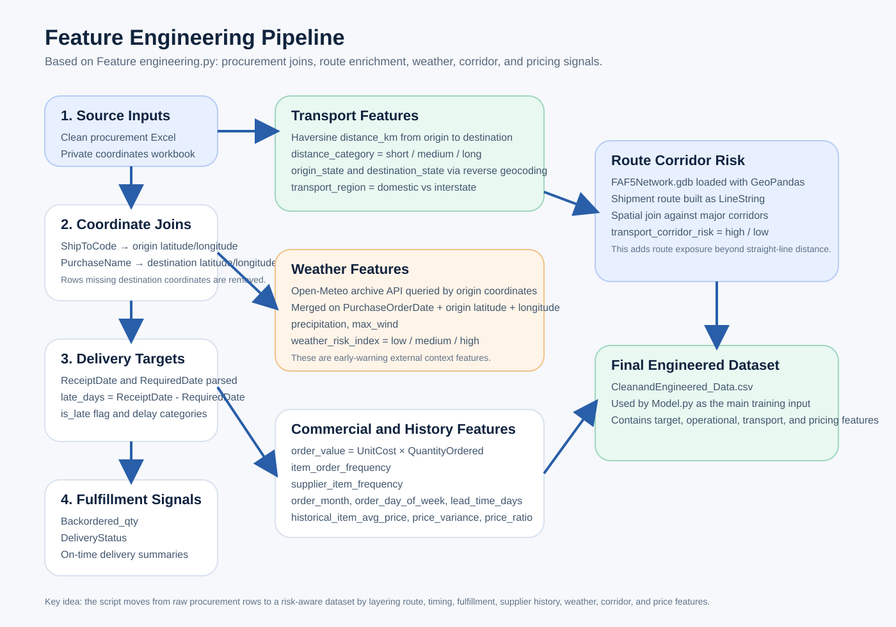
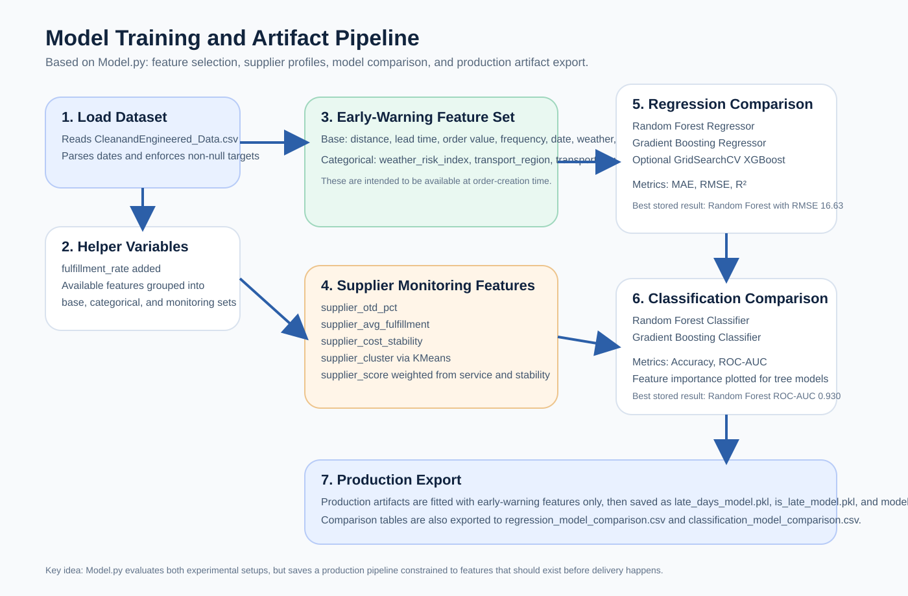
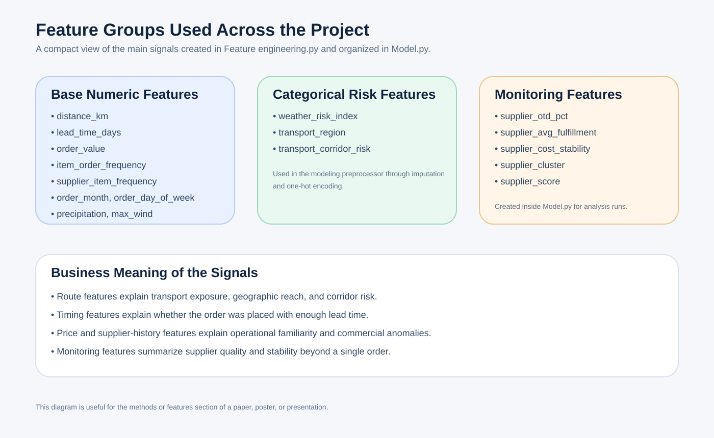

These visuals were generated from the current codebase reading of Feature engineering.py and Model.py. You can use them in a poster, paper web page, or presentation deck.
Feature engineering.py
Model.py


